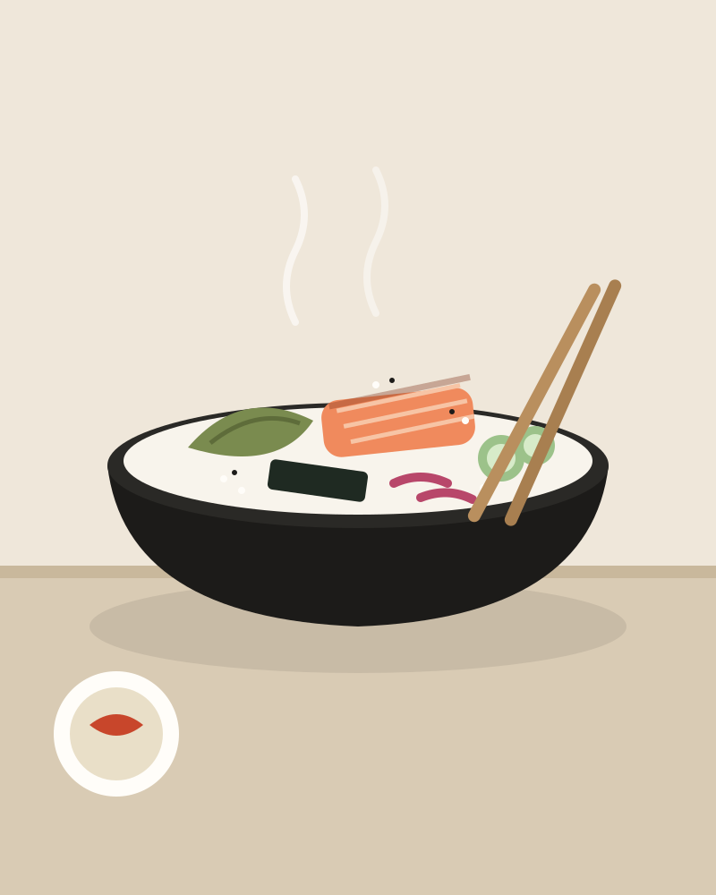

A short menu, cooked in front of you. Seasonal Finnish vegetables, lean fish and meat, very little oil, and a broth we start every morning.

Small on purpose, so every bowl gets attention.
Five bowls and soups, two of them fully plant-based. Change the rice amount for free.
Every main comes on a tray with today's small side and pickles.
Hojicha cheesecake or a slice of black sesame pound cake.
Lunch without booking. Evenings by booking, 45 minutes per seat.
| Monday | closed |
| Tue – Fri | 11:00–15:00 · 17:00–21:00 |
| Saturday | 12:00–21:00 |
| Sunday | closed |
Pilvikuja 4, 00100 Helsinki (fictional address)
+358 40 000 0000 · hello@onomichi.example
Book an evening seat